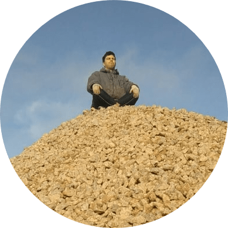

Corentin Dumery
3D R&D Engineer
CEA Paris-Saclay
LGLS (Software Engineering for Simulation Lab)

I received a Master in Computer Science from the National University of Singapore in 2020,
as well as a Master in Software Engineering from
Télécom Paris (Institut Polytechnique de Paris).
My primary research interests lie in 3D geometry processing and its applications, ranging from physics-based simulation to animation. In the past, I have worked on several topics centered around discrete shape modelling, including mesh deformation using geometric energies, hexahedral meshing, or semantic mesh segmentation. I'm also interested in data science techniques and how they can be applied to 3D problems, such as machine learning & optimization, operations research, extended Kalman filtering, or dimensionality reduction.
Most people get it wrong - and that's fine - but here's how my name is pronounced in French.